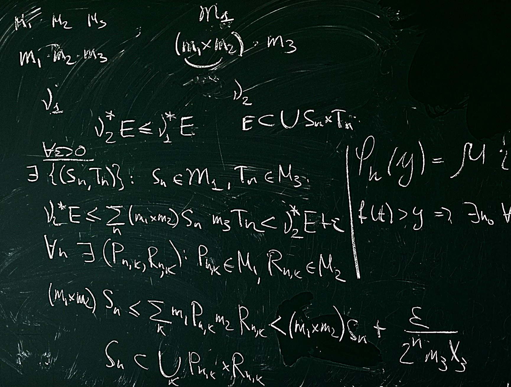
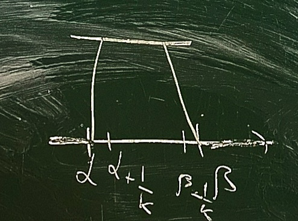
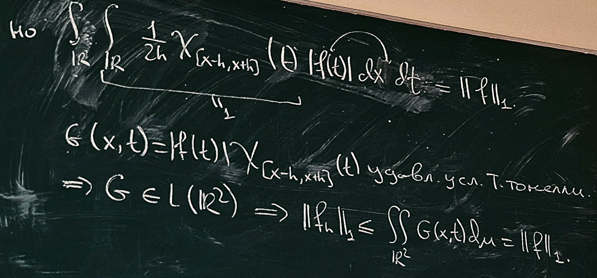

Достаточно рассмотреть \(h(x) = \chi_B(x), \,\,\,\, B \in R(S), \,\,\,\, B = \bigsqcup_{k = 1}^n(a_k, b_k)\), так как \(R(S)\) – это базис классической меры.
Построим функцию ступеньками.

\(\displaystyle \sum_{k = 1}^{n}\mu_k \cdot \chi_{B_k}, \,\,\,\, B_k \in R(S)\) плотны в \(L_p\) по последней задаче из домашки.
В случае прямой: \(C_0(\mathbb{R}) = \{f\) – непрерывна, \(f(x) \to 0, \,\,\,\, x\to \infty\}\). Это множество плотно в \(L_p(\mathbb{R})\) при \(1 \leqslant p < \infty\).
Простая \(\displaystyle \sum_{k = 1}^{n}a_k\chi_{B_k}, \,\,\,\, B_k \in R(S)\) приближается непрерывными \(g: \,\,\,\, g \equiv 0\) вне \(\bigcup_k B_k\)
Определение: Пусть \(f \in C([a, b])\). Модуль непрерывности \(f\) – это \(w(f, \delta) = \sup_{(x, y), \,\,\,\, |x - y| < \delta}|f(x) - f(y)|\)
Доказательство:
Определение: Пусть \(f\) – \(T\)-периодическая, \(f \in L_p([0, 1])\).
Интегральный модуль непрерывности \(f\) – это \(w(f, \delta)_p = \sup_{0 < h < \delta}||f(\cdot + h) - f(\cdot)||_p = \sup_{0 < h < \delta}\left(\displaystyle\int\limits_{[0, 1]} |f(x + h)-f(x)|^p\mu(dx)\right)^{\frac1p}\).
Определение: (какие-то средние) Пусть \(f\in L_p(\mathbb{R})\) для некоторого \(p < \infty\). Тогда \(f_h(x) = \frac1{2h} \displaystyle\int\limits_{[x - h, x + h]} f(t)\mu(dt)\)
Утверждение: Если \(f \in L_1(\mathbb{R})\), то \(f_h \in L_1(\mathbb{R})\) и \(||f_h||_1 < ||f||_1\)
Доказательство:

Утверждение: Если \(f\in L_p(\mathbb{R})\), то \(||f - f_h||_p \to 0, \,\,\,\, h \to +0\)
Доказательство:
\(\forall g \in L_p(\mathbb{R})\cap C_0(\mathbb{R}) \,\,\,\, \forall x \,\,\,\, g(x) - g_h(x) \to 0, \,\,\,\, h \to +0\)
\(g_n \in L_p \,\,\,\, \displaystyle\int\limits_{\mathbb{R}} |g(x) - g_h(x)|^p\mu(dx) \to 0, \,\,\,\, h \to +0\)
По теореме Лебега \(\forall \varepsilon > 0 \,\,\,\, \forall f \in L_p \,\,\,\, \exists g \in C_0(\mathbb{R}): \,\,\,\, ||f - g||_p < \varepsilon\)
\(||f - f_h||_p \leqslant ||f - g||_p + ||g - g_n||_p + ||g_n - f_n||_p\)
Задача: Доказать свойства интегрального модуля непрерывности (свойства как у модуля непрерывноси).
Доказательство:
Задача: Пусть \(f\in \mathcal{L}_1([0, 2\pi])\). Тогда \(\left|\frac1{\pi} \displaystyle\int\limits_{[0, 2\pi]} f(x)\cos(nx)\mu(dx)\right| \leqslant \frac1{2\pi}w(f, \frac{\pi}n)_1\).
Доказательство:
Задача: Если \(f \in L_p(\mathbb{R})\), то \(||f_n||_p \leqslant ||f||_p, \,\,\,\, 1 < p < \infty\)
Доказательство:
Задача: Если \(g\in L_p(\mathbb{R}) \cap C_0(\mathbb{R})\), то \(g\) равномерно непрерывна на прямой.
Доказательство:
Задача: Если \(\mu\) – классическая мера, \(\mu X > 0, \,\,\,\, 1 \leqslant p \leqslant \infty\), то \(\dim L_p(X) = +\infty\).
Доказательство: